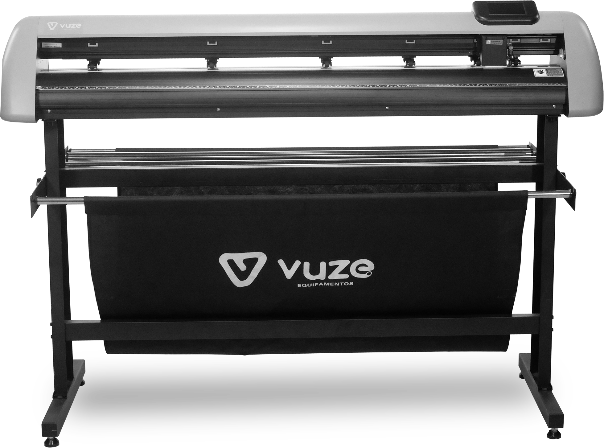

Adesivos e rótulos
Ideias que ganham forma.
Recorte de vinil e adesivo leitoso para identificação, decoração e comunicação de marcas.
Vuze Cut120 · Plotter de recorte
120 cm de corte e contorno, com câmera CCD e painel touch. Uma máquina para transformar suas ideias em adesivos, sinalização e personalização.

01 · Por dentro dos detalhes
Gire a máquina, aproxime a vista e selecione os pontos para descobrir cada componente.
Abra, gire e descubra os detalhes.
Só mais um instante.
Você pode tentar novamente ou continuar conhecendo a máquina pelas informações ao lado.
Arraste para girar. Use os botões para aproximar e mudar a vista. No celular, deslize para cima ou para baixo para continuar a página.
A vista 3D pode ser aberta pelo botão Explorar em 3D.
02 · Da ideia à aplicação
Uma mesma máquina para diferentes trabalhos de comunicação visual e personalização.
Adesivos e rótulos
Recorte de vinil e adesivo leitoso para identificação, decoração e comunicação de marcas.
Sinalização
Aplicações com refletivos e materiais de sinalização, conforme os ajustes e a especificação de cada mídia.
Personalização têxtil
Recorte de emborrachados têxteis para trabalhos de personalização e acabamento.
A escolha da lâmina, a pressão e a velocidade dependem do material. Confirme a compatibilidade da sua mídia com o especialista.
03 · Ficha técnica
Confira a área de trabalho, os recursos e o espaço necessário para instalar a Vuze Cut120.
| Corte e contorno | Até 120 cm |
|---|---|
| Alimentação máxima | 135 cm |
| Pressão de corte | Até 1.000 g |
| Velocidade | 800 mm/s |
| Câmera | CCD |
|---|---|
| Comandos | Painel touch superior |
| Conexões | USB, serial ou U Disk |
| Placa | ARMS |
| Acionamento | Digital DC, motor de passo |
| Dimensões (L × P × A) | 156 × 68 × 110 cm |
|---|---|
| Alimentação elétrica | 220 V |
| Estrutura | Chassi com trilho em alumínio |
| Modelo | VCUT120CAM |
| Corte e contorno | Até 120 cm |
|---|---|
| Alimentação máxima | 135 cm |
| Pressão de corte | Até 1.000 g |
| Velocidade | 800 mm/s |
| Câmera | CCD |
|---|---|
| Comandos | Painel touch superior |
| Conexões | USB, serial ou U Disk |
| Placa | ARMS |
| Acionamento | Digital DC, motor de passo |
| Dimensões (L × P × A) | 156 × 68 × 110 cm |
|---|---|
| Alimentação elétrica | 220 V |
| Estrutura | Chassi com trilho em alumínio |
| Modelo | VCUT120CAM |
04 · Vamos falar da sua produção
Conte o que você quer produzir. O especialista pode ajudar a avaliar a aplicação e apresentar as condições para adquirir a Vuze Cut120.
Atendimento Blips
Preencha o formulário comercial e informe seu interesse na Vuze Cut120.
Falar com especialistaVocê será direcionado ao formulário de atendimento da página oficial.
Preço, disponibilidade, financiamento e cobertura de garantia são confirmados no atendimento.
Antes de começar